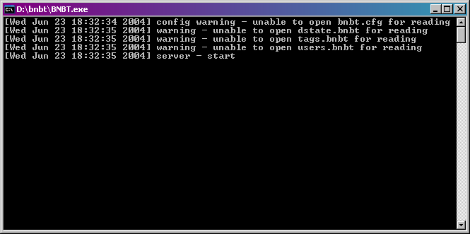
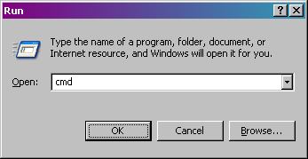

BNBT does not come with an installer. BNBT does not create, modify, or delete any registry keys, it does not copy files to your system folder, and it does not create any desktop or start menu shortcuts. To run BNBT, simply double click BNBT.exe or BNBTMySQL.exe. For example,
BNBT may report warnings on startup (such as those seen above). Almost all warnings can be ignored. If BNBT encounters a fatal error it will automatically shutdown.
If you want to run BNBT in the background as an NT Service, open a command interpreter (click on the Start Menu, click on Run, and type cmd as shown below).
Change to the BNBT folder and run BNBT with one of the following command line options,